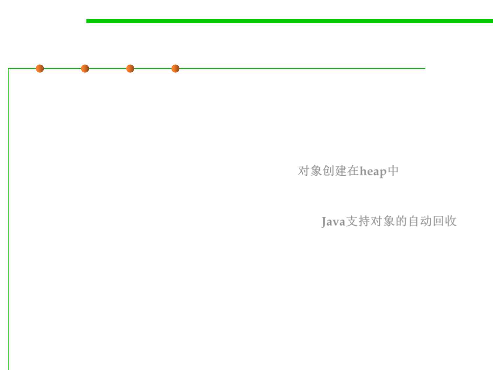

8.1 Metrics, Principles, and Methods of Construction for Performance
Memory in Java
▪ The Java memory model specifies how the Java virtual machine (JVM)
works with the computer's memory (RAM).
▪ JVM is a model of a whole computer so this model naturally includes a
memory model (Java memory model).
– New objects created and placed in the heap. 对象创建在heap中
– Once your application have no reference anymore to an object the Java
garbage collector is allowed to delete this object and remove the memory so
that your application can use this memory again. Java支持对象的自动回收
▪ The original Java memory model was insufficient, so the Java memory
model was revised in Java 1.5.
▪ This version of the Java memory model is still in use in Java 8.